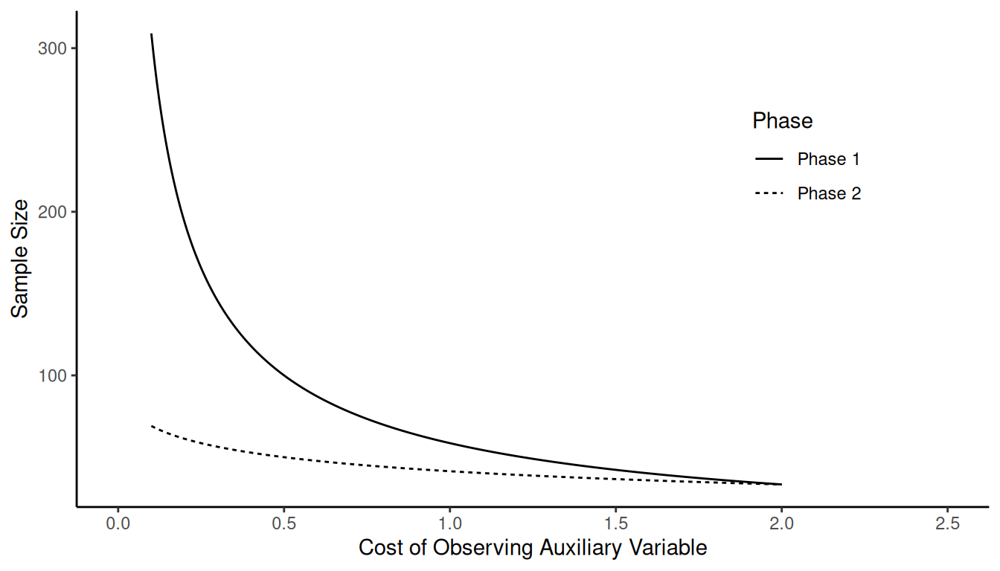
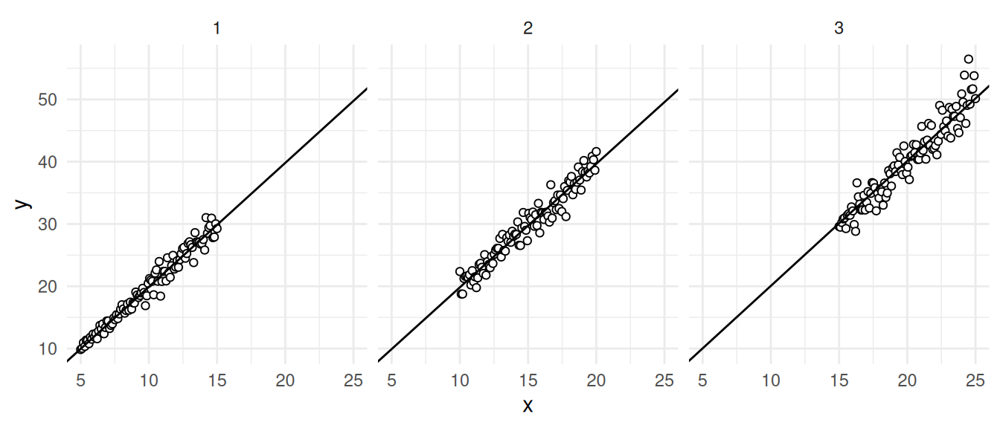

You can also download a PDF copy of this lecture.
Ratio estimators are (usually) biased.
Suppose that \(\theta\) is a parameter and \(\hat\theta\) is an estimator. An expression of the “imprecision” of \(\hat\theta\) for estimating \(\theta\) is the mean squared error (MSE) defined as \[ E[(\hat\theta - \theta)^2] = \sum_{j=1}^{J} (\hat\theta_j - \theta)^2 P(\mathcal{S}_j), \] for a sample space of \(J\) samples, where the \(j\)-th sample is denoted as \(\mathcal{S}_j\), and the estimate produced by that sample is denoted as \(\hat\theta_j\).
The mean squared error can be usefully decomposed into two terms as \[ E[(\hat\theta - \theta)^2] = [E(\hat\theta) - \theta]^2 + V(\hat\theta), \] where \(E(\hat\theta) - \theta\) is the bias of the estimator, and \(V(\hat\theta)\) is the variance of the estimator. Sometimes we can increase one while decreasing the other leading to a bias-variance trade-off.
Under simple random sampling the ratio estimators of \(\mu_y\) and \(\tau_y\) are \[ \hat\mu_y = \frac{\bar{y}}{\bar{x}}\mu_x \ \ \ \text{and} \ \ \ \hat\tau_y = \frac{\bar{y}}{\bar{x}}\tau_x, \] respectively. But we cannot use these estimators of the corresponding parameter for the auxiliary variable (i.e., \(\mu_x\) or \(\tau_x\)) is unknown. One solution is to use double sampling.
Using simple random sampling, obtain a sample of size \(n'\) and compute \(\hat\mu_x = \bar{x}'\) or \(\hat\tau_x = N\bar{x}'\), where \(\bar{x}'\) is the mean of the auxiliary variable for the \(n'\) sampled elements.
Select a sample of size \(n < n'\) from the first sample using simple random sampling and compute the ratio estimator \[ \hat\mu_y = \frac{\bar{y}}{\bar{x}}\hat\mu_x \ \ \ \text{or} \ \ \ \hat\tau_y = \frac{\bar{y}}{\bar{x}}\hat\tau_x. \]
| \(i\) | Area | Length \(\times\) Width |
|---|---|---|
| 1 | 80.7 | 113.08 |
| 2 | 69.7 | 98.40 |
| 3 | 66.1 | 97.17 |
| 4 | 198.40 | |
| 5 | 103.20 | |
| 6 | 55.10 | |
| 7 | 55.10 | |
| 8 | 31.5 | 43.96 |
| 9 | 28.35 | |
| 10 | 61.10 | |
| 11 | 28.5 | 39.15 |
| 12 | 55.35 | |
| 13 | 73.4 | 101.43 |
| 14 | 48.4 | 58.80 |
| 15 | 74.1 | 102.50 |
| 16 | 36.57 | |
| 17 | 16.7 | 26.28 |
| 18 | 30.20 | |
| 19 | 143.63 | |
| 20 | 29.4 | 40.00 |
The mean crude area approximation of the 20 leaves in the first sample is 74.39 square cm. the mean area of the 10 leaves in the second sample is 51.85 square cm, and the mean crude area approximation for these 10 leaves is 72.08 square cm. What is are the estimates of \(\mu_y\) and \(\tau_y\) using a ratio estimator?
How should we decide on the two sample sizes: \(n'\) and \(n\)?
The estimated variance of \(\hat\mu_y\) here is \[ V(\hat\mu_y) \approx \underbrace{\left(1 - \frac{n'}{N}\right)\frac{\sigma^2}{n'}}_a + \underbrace{\left(1 - \frac{n}{n'}\right)\frac{\sigma_r^2}{n}}_b, \] where \[ \sigma^2 = \frac{1}{N-1}\sum_{i=1}^N(y_i-\mu_y)^2 \ \ \text{and} \ \ \sigma_r^2 = \frac{1}{N-1}\sum_{i=1}^N(y_i-Rx_i)^2. \] Term \(a\) is due to first phase sampling, and term \(b\) is due to the second phase sampling.
Assume a total cost of the survey of \(C = c_xn' + c_yn\), where \[\begin{align*} c_x & = \text{cost per unit for observing $x_i$}, \\ c_y & = \text{cost per unit for observing $y_i$}. \end{align*}\] Note that we only need to observe the auxiliary variable (\(x_i\)) in the first phase, and the target variable (\(y_i\)) is only observed in the second phase. For a fixed total cost of \(C\), the variance of \(\hat\mu_y\) and \(\hat\tau_y\) is minimized if \[ \frac{n}{n'} = \sqrt{\frac{c_x}{c_y}\left(\frac{1}{\sigma^2/\sigma_r^2-1}\right)}, \] assuming \(\sigma^2 > \sigma_r^2\). The optimum allocation is then \[ n' = C/(c_x + fc_y) \ \ \ \text{and} \ \ \ n = fC/(c_x + fc_y), \] where \(f = n/n'\).
Example: Suppose that the cost of observing the auxiliary variable is \(c_x\) = 0.5, the cost of observing the target variable is \(c_y\) = 1, and the relative efficiency is \(\sigma^2/\sigma_r^2\) = 4. For a fixed total cost of \(C\) = 100, we can show that \(f\) \(\approx\) 0.41, \(n'\) \(\approx\) 110, and \(n\) \(\approx\) 45.
Note that we must have \(n' > n\) if we are to use double sampling. There are two limiting cases to consider.
If \(n' = n\) then double sampling reduces to a simple random sampling design where we just use the first phase sample and the estimators become \(\hat\mu_y = \bar{y}\) and \(\hat\tau_y = N\bar{y}\) (i.e., we are not using the ratio estimator).
If \(n' = N\) then double sampling reduces to a simple random sampling design where the first phase sample is a census and the estimators become the usual ratio estimators \[ \hat\mu_y = \frac{\bar{y}}{\bar{x}}\mu_x \ \ \ \text{and} \ \ \ \hat\tau_y = \frac{\bar{y}}{\bar{x}}\tau_x, \] as \(\mu_x\) and \(\tau_x\) will be known and need not be estimated.
When is using double sampling with a ratio estimator better than using simple random sampling without a ratio estimator?
Example: Suppose that \(C\) = 100, \(c_y\) = 1, and \(\sigma^2/\sigma_r^2 = 3\). What happens as we increase \(c_x\) (i.e., the cost of observing the auxiliary variable)? 
Example: Suppose that \(C\) = 100, \(c_x\) = 1, and \(\sigma^2/\sigma_r^2 = 3\). What happens as we increase \(c_y\) (i.e., the cost of observing the target variable)?
Example: Suppose that \(C\) = 100, \(c_y\) = 1, and \(c_x\) = 1. What happens as we increase \(\sigma^2/\sigma_r^2\) (i.e., the relative efficiency of the ratio estimator)?
There are a couple of different ways to use a ratio estimator with stratified random sampling.
Estimate the mean or total of each stratum separately using a ratio estimator.
Estimate \(\mu_{y,j}\) or \(\tau_{y,j}\) separately for each stratum using a ratio estimator so that \[ \hat\mu_{y,j} = \frac{\bar{y}_j}{\bar{x}_j}\mu_{x,j} \ \ \ \text{or} \ \ \ \hat\tau_{y,j} = \frac{\bar{y}_j}{\bar{x}_j}\tau_{x,j}, \] respectively.
Estimate \(\mu_y\) or \(\tau_y\) using \[ \hat\mu_y = \sum_{j=1}^L\frac{N_j}{N}\hat\mu_{y,j} \ \ \ \text{and} \ \ \ \hat\tau_y = \sum_{j=1}^L \hat\tau_{y,j}, \] respectively.
Use one ratio estimator based on sample means that combine the means from the strata.
| Stratum | \(N_j\) | \(n_j\) | \(\bar{y}_j\) | \(\bar{x}_j\) | \(\mu_{x,j}\) |
|---|---|---|---|---|---|
| 1 | 500 | 100 | 90 | 50 | 95 |
| 2 | 400 | 50 | 80 | 45 | 78 |
| 3 | 100 | 25 | 70 | 40 | 72 |
Also \(\mu_x\) = 85.9. The separate ratio estimator of \(\mu_y\) is \[ \hat\mu_y = \frac{500}{1000}\underbrace{\left[\left(\frac{90}{50}\right)95\right]}_{\hat\mu_{y,1}} + \frac{400}{1000}\underbrace{\left[\left(\frac{80}{45}\right)78\right]}_{\hat\mu_{y,2}} + \frac{100}{1000}\underbrace{\left[\left(\frac{70}{40}\right)72\right]}_{\hat\mu_{y,3}}. \] The combined ratio estimator is \[ \hat\mu_y = \frac{\overbrace{\left(\frac{500}{1000}\right)90 + \left(\frac{400}{1000}\right)80 + \left(\frac{100}{1000}\right)70}^{\bar{y}_{st}}}{\underbrace{\left(\frac{500}{1000}\right)50 + \left(\frac{400}{1000}\right)45 + \left(\frac{100}{1000}\right)40}_{\bar{x}_{st}}}85.9. \] Which one should we use? It depends on a couple of factors.
